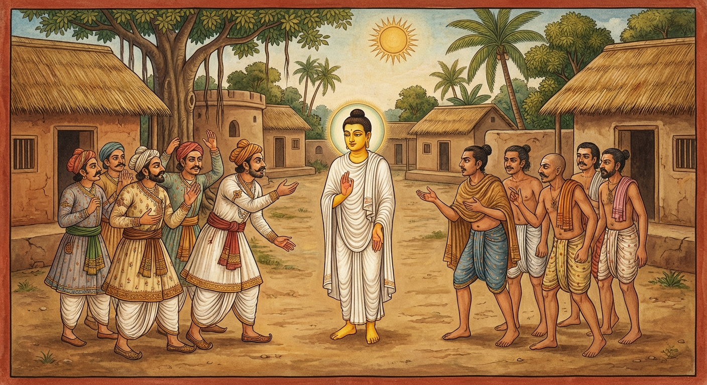

9. නක්ඛත්ත ජාතකය (49)
“නක්ඛත්තං පතිමානෙන්ත” (නැකැත් බලාපොරොත්තුවෙන් සිටින) යන මේ ජාතකය බුදුරජාණන් වහන්සේ ජේතවනාරාමයෙහි වැඩවසන සේක්, එක්තරා ආජීවකයකු අරබයා දේශනා කළහ. සැවැත් නුවර එක් කුල පුත්රයෙක් තමාගේ පුත්රයාට ජනපදයෙහි එක් කුල දියණියක් විවාහ කර දීමට කැමති කරවාගෙන, “අසුවල් දිනයෙහි පාවා ගන්නෙමු” යි දිනයක් නියම කොට, ඒ දිනය පැමිණි කල්හි තමන්ගේ කුලූපග ආජීවකයාගෙන් “ස්වාමීනි, අද අපි මංගල්යයක් සිදු කරන්නෙමු. නැකත යහපත් දැ?” යි විමසීය. ඔහු ද “මොහු පළමුව මගෙන් නොවිමසා දිනය නියම කොට ගෙන දැන් මගෙන් නැවත විමසයි. ඉන්න, මොහු හික්මවන්නෙමි” යි කිපී, “අද නැකත ඉතා අශුභ ය. අද මංගල්යය සිදු නොකරවු. ඉදින් කළහොත් මහා විනාශයක් වන්නේ ය” යි කීවේ ය. ඒ පවුලේ මිනිස්සු ඔහුගේ වචනය විශ්වාස කොට එදින (මනාලිය ගෙන ඒමට) නොගියහ. නගරවාසීහු (මනාලියගේ පාර්ශ්වය) සියලු මංගල කටයුතු සූදානම් කොට, ඔවුන්ගේ නොපැමිණීම දැක, “ඔවුන් විසින්මයි අද දිනය නියම කර ගත්තේ, නමුත් ඔවුන් ආවේ නැත. අපට බොහෝ වියදම් ද ගියා. ඔවුන්ගෙන් අපට ඇති වැඩේ කුමක්ද? අපේ දියණිය වෙනත් අයෙකුට දෙමු” යි කියා, සූදානම් කළ මංගල්යයෙන් ම දියණිය වෙනත් කුලයකට දුන්හ.
අනෙක් පිරිස පසු දින පැමිණ “අපගේ දියණිය දෙන්න” යැයි ඉල්ලා සිටියහ. එවිට සැවැත් නුවරවාසීහු (මනාලියගේ පාර්ශ්වය), “තොපි ජනපදවාසී ගැහැවියෝ පවිටු මිනිස්සු ය. දිනය නියම කරගෙන අපට නින්දා කොට නොපැමිණියහු ය. ආ පාරෙන් ම ආපසු යවු. අප විසින් දියණිය අනෙකෙකුට දෙන ලදී” යි පරිභව කළහ. ඔවුහු ඔවුන් සමඟ කලහ කොට දියණිය නොලැබ, ආ මඟින් ම ආපසු ගියහ. ඒ ආජීවකයා විසින් ඒ මිනිසුන්ගේ මංගල කටයුත්තට අන්තරාය කළ බව භික්ෂූන් අතර ප්රකට විය. ඒ භික්ෂූහු දම් සභාවෙහි රැස්ව, “ඇවැත්නි, ආජීවකයා විසින් කුලයක මංගල අන්තරාය කරන ලද්දේ ය” යි කථා කරමින් සිටියහ. ශාස්තෘන් වහන්සේ වැඩම කොට, “මහණෙනි, කවර කථාවකින් යුතුව මේ දැන් රැස්ව සිටියහු ද?” යි විමසූ සේක. ඔවුහු “මේ කථාවෙනැ” යි කීහ. “මහණෙනි, මේ ආජීවකයා ඒ කුලයේ මංගල අන්තරාය කළේ දැන් පමණක් නොවේ. පෙරත් මොහු ඔවුන්ට කිපී මංගල අන්තරාය කළේ ම ය” යි වදාරා අතීත කථාව ගෙනහැර දැක්වූ සේක.
අතීතයෙහි බරණැස් නුවර බ්රහ්මදත්ත රජු රාජ්යය කරන කල්හි, නගරවාසීහු ජනපදවාසීන්ගේ දියණියක් විවාහ කර ගැනීමට කැමති කරවාගෙන, දිනය නියම කොට තමන්ගේ කුලූපග ආජීවකයාගෙන් “ස්වාමීනි, අද අපගේ එක් මංගල කටයුත්තක් ඇත. නැකත යහපත් ද?” යි විමසූහ. ඔහු “මොවුහු තමන්ගේ කැමැත්තට දිනය නියම කරගෙන දැන් මගෙන් විමසති” යි කිපී, “අද මොවුන්ගේ මංගල අන්තරාය කරන්නෙමි” යි සිතා, “අද නැකත අසුබ ය. ඉදින් කළහොත් මහා විනාශයකට පැමිණෙන්නාහු ය” යි කීවේ ය. ඔවුහු ඔහුගේ වචනය විශ්වාස කොට නොගියහ. ජනපදවාසීහු ඔවුන්ගේ නොපැමිණීම දැන, “ඔවුහු අද දිනය නියම කරගෙනත් නොපැමිණියහ. ඔවුන්ගෙන් අපට ඇති ඵලය කිම ද? අන් අයෙකුට දියණිය දෙමු” යි වෙනත් අයෙකුට දියණිය දුන්හ. නගරවාසීහු පසු දින පැමිණ දියණිය ඉල්ලූහ. ජනපදවාසීහු, “නගරවාසී ඔබ ලජ්ජා නැති ගැහැවියෝ ය. දිනය නියම කරගෙන දියණිය ගෙන යන්නට නොපැමිණියහු ය. ඔබලා නොපැමිණි හෙයින් අපි අන් අයෙකුට දුන්නෙමු” යි කීහ. “අපි ආජීවකයාගෙන් විමසා ‘නැකත සුබ නැතැ’ යි කී නිසා නොපැමිණියෙමු. අපට දියණිය දෙන්න” යැයි නගරවාසීහු කීහ. “අප විසින් ඔබලා නොපැමිණි හෙයින් අන් අයෙකුට දෙන ලදී. දැන් දුන් දියණිය කෙසේ නැවත ගෙන එන්නෙමු ද?” යි (ඔවුහු පැවසූහ).
මෙසේ ඔවුන් ඔවුනොවුන් කලහ කරද්දී, යම් කාර්යයක් සඳහා ජනපදයට ගොස් සිටි එක් නගරවාසී පණ්ඩිත පුරුෂයෙක්, ඒ නගරවාසීන් “අපි ආජීවකයාගෙන් විමසා නැකතේ අසුබ බව නිසා නොපැමිණියෙමු” යි කියනු අසා, “නැකතෙන් ඇති ප්රයෝජනය කිම ද? දියණිය ලැබීම ම නැකත නොවේ ද?” යි පවසා මේ ගාථාව කීවේ ය.

“නැකැත් එනතුරු බලා සිටින මෝඩයාට අර්ථය (ලාභය) මග හැරී යයි. අර්ථය ලැබීම ම අර්ථයේ නැකත යි. අහසේ ඇති තරු කුමක් කරන්න ද?”
එහි පතිමානෙන්තං යනු දැන් නැකත උදාවෙයි, දැන් නැකත උදාවෙයි කියා බලාපොරොත්තු වන්නා ය. අත්ථො බාලං උපච්චගා යනු ඒ නගරවාසී මෝඩයාට දියණිය ලැබීම නම් වූ අර්ථය ඉක්ම ගියේ ය (නැති විය). අත්ථො අත්ථස්ස නක්ඛත්තං යනු යම් අර්ථයක් (ලාභයක්) සොයමින් හැසිරෙයි ද, ඒ ලත් අර්ථය ම අර්ථයේ නැකත නම් වේ. කිං කරිස්සන්ති තාරකා යනු ඊට අමතර ව අහසේ තිබෙන තරු කුමක් කරන්න ද? කවර අර්ථයක් සාදා දෙන්න ද? යනුයි. නගරවාසීහු කලහ කොට දියණිය නොලැබ ම ආපසු ගියහ.
ශාස්තෘන් වහන්සේ, “මහණෙනි, මේ ආජීවකයා මේ කුලයට මංගල අන්තරාය කළේ දැන් පමණක් නොවේ. පෙර ද අන්තරායක් කළේ ම ය” යි මේ ධර්ම දේශනාව ගෙනහැර දක්වා, පූර්වාපර සන්ධි ගළපා ජාතකය සමාප්ත කළ සේක. “එකල ආජීවකයා වූයේ දැන් මේ ආජීවකයා ම ය. එකල කුලයන් වූයේ දැන් මේ කුලයන් ම ය. ගාථාව කියා සිටි පණ්ඩිත පුරුෂයා නම් මම ම වෙමි.”
නම වන නක්ඛත්ත ජාතක වර්ණනාවයි.